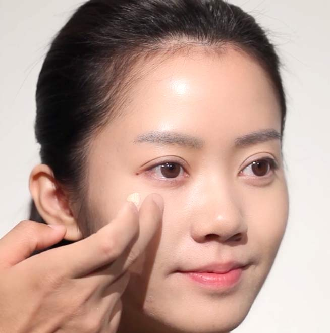
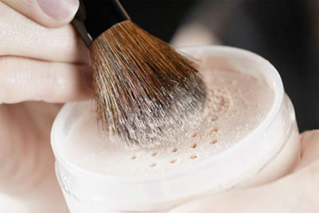

Step1：上粉底乳

涂抹粉底最好的方法是分区涂抹：先取适量的粉底乳于手背虎口处，分别于两颊、额头、下巴、鼻子等处点三点，再用无名指指腹以点按方式由内往外推匀。注意下颚的边缘和发迹交接处、眼角、鼻翼和嘴角周围要涂抹到。粉底按区域推匀之后，再在下一区使用粉底乳，同时在推匀粉底的过程里，避免拉扯肌肤，这样对肌肤的伤害很大哦。
Step2：遮瑕
将遮瑕膏少量挤在无名指上轻轻按压在瑕疵部位，然后用海绵轻拍在遮瑕部位使之晕开，如果需要加强，可再次使用。
Step3：定妆

用散粉刷蘸取散粉，抖匀，以打圆的方式由脸颊内侧向外侧均匀地刷上适量的散粉，在脸型外缘与发迹边界处用量逐渐减少。
播放视频《如何打造底妆 - 定妆》
*建议在WIFI环境下观看
播放视频《如何打造底妆 - 遮瑕》
*建议在WIFI环境下观看
播放视频《如何打造底妆 - 粉底乳》
*建议在WIFI环境下观看